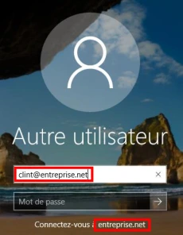
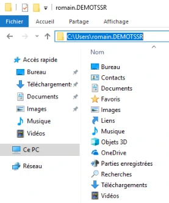
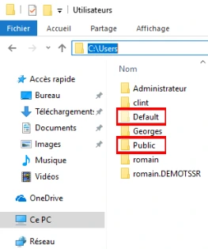
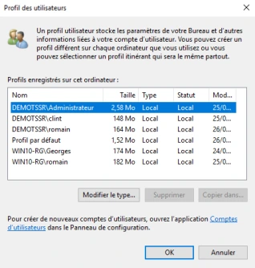
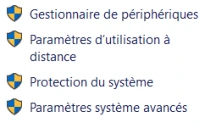
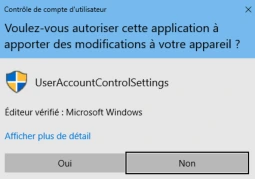
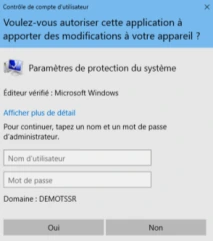
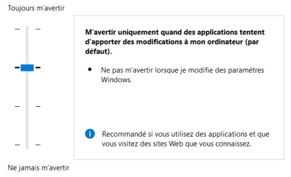
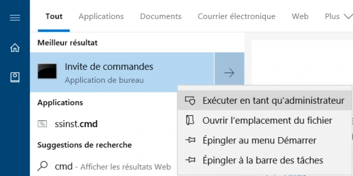
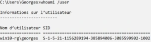

Transcription structurée du document source. Les compléments pédagogiques sont présentés dans l’onglet Cours Optimisé IA.
Systèmes clients Microsoft
Module 05 – Les utilisateurs et les groupes
Objectifs
- Prendre conscience de l'importance de la notion d'utilisateur
- Distinguer les utilisateurs et leurs profils
- Gérer les utilisateurs et les groupes
- Découvrir les outils de gestion
- Assimiler le fonctionnement de l'UAC
Gestion des utilisateurs
Utilisateur du domaine
- Stocké dans une base de données commune (annuaire Active Directory)
- Sur un serveur de l'entreprise (contrôleur de domaine)
- Externalisé chez un prestataire (Microsoft Azure ou autre)
- Authentification Kerberos sécurisée par le réseau
- Un utilisateur peut ouvrir une session sur tous les ordinateurs du domaine
- Un utilisateur (local, de domaine) est identifié par le système grâce à son SID (Security IDentifier)
Gestion des utilisateurs
Ouverture de session
- Pour les utilisateurs locaux
- Utiliser un compte présent dans la base SAM
- Sont affichés par défaut sur l'écran d'accueil
- Pour les utilisateurs du domaine
- Jonction du poste au domaine de l'entreprise indispensable au préalable
- Domaine sélectionné par défaut Possibilité de s'authentifier grâce à l'annuaire d'un autre domaine
Attention, la liste des utilisateurs locaux n’apparaît plus une fois l’ordinateur joint au domaine de l’entreprise !

Illustration isolée du support — Module 05 - Support de cours
Les catégories d’utilisateurs
- Standard
- Pour utiliser les ressources de l'ordinateur
- Être membre du groupe Utilisateurs
- Administrateur
- Pour utiliser et modifier les ressources de l'ordinateur
- Être membre du groupe Administrateurs
- L'utilisateur créé à l'installation du système est membre du groupe Administrateurs
- Le compte administrateur est désactivé par défaut
- Le compte Invité
- Pour une utilisation restreinte des ressources de l'ordinateur
- Pas besoin de mot de passe pour accéder aux ressources
- Ce compte est désactivé par défaut
La gestion des profils
Un utilisateur ouvre une session pour la première fois, un profil personnel est créé
- Dans le dossier C:\Users
- Propre à chaque utilisateur
- Contient tous les paramètres et données de l'utilisateur
- Documents
- Téléchargement
- Bureau
- Images…

Illustration isolée du support — Module 05 - Support de cours
La gestion des profils
Un utilisateur ouvre une session pour la première fois, un profil personnel est créé
- Dans le dossier C:\Users
- Propre à chaque utilisateur
- Contient tous les paramètres et données de l'utilisateur
- Documents
- Téléchargement
- Bureau
- Images…
- Profil public : commun à tous les utilisateurs
- Profil par défaut (caché) : modèle pour la création d'un nouveau profil
La gestion des profils
Comment gérer les profils ?
- La gestion manuelle des profils dans le dossier c:\Users est à proscrire !
- sysdm.cpl onglet Paramètres systèmes avancés
- Supprimer des profils
- Modifier le type du profil
- Gestion du profil par défaut

Illustration isolée du support — Module 05 - Support de cours
Illustration isolée du support — Module 05 - Support de cours
Gestion des utilisateurs et des groupes
Configuration en PowerShell
| Description | verbe | -nom |
|---|
| Affiche la liste des utilisateurs locaux | Get | -LocalUser |
| Créer un nouvel utilisateur dans la base SAM | New | -LocalUser |
| Modifier un utilisateur local existant | Set | -LocalUser |
| Renommer un utilisateur | Rename | -LocalUser |
| Activer l’utilisateur, il pourra de ce fait utiliser les ressources de l’ordinateur | Enable | -LocalUser |
| Désactiver un utilisateur | Disable | -LocalUser |
| Supprimer un utilisateur de la base SAM | Remove | -LocalUser |
Manipulation des groupes et de leurs membres avec les cmdlets : {Get | Set | New | Remove}-LocalGroup et {Get | Set | Remove}-LocalGroupMember.
Démonstration
Contrôle de comptes d’utilisateur (UAC)
Sans action particulière, le système loge tous les utilisateurs à la même enseigne … même les administrateurs !
- Par l'intermédiaire de l'UAC, le système n'accorde les privilèges que lorsque c'est nécessaire
- Élévation de pouvoir symbolisée par le « bouclier »
- Validation requise pour un administrateur
- Authentification requise pour un utilisateur
Contrôle de comptes d’utilisateur (UAC)
- Pourquoi ces contrôles ?
- Lutter contre les actions des programmes malveillants
- Avertir face à un paramètre sensible du système
- Comment le configurer ?
- Via le panneau de configuration
- À l'aide de la stratégie de sécurité locale
- secpol.msc
- Stratégies locales > Options de sécurité
- Valeurs Contrôle de compte d'utilisateur
Il est donc déconseillé de désactiver l’UAC.

Illustration isolée du support — Module 05 - Support de cours
Illustration isolée du support — Module 05 - Support de cours
Illustration isolée du support — Module 05 - Support de cours
Illustration isolée du support — Module 05 - Support de cours
Contrôle de comptes d’utilisateur (UAC)
Pour certaines actions, il est nécessaire de demander l’élévation
- Graphiquement avec la fonction Exécuter en tant qu’administrateur
Récapitulatif
Un utilisateur est associé à :
- Un nom d’ouverture de session et un mot de passe
- Un profil local
- Généré à la première ouverture de session
- Contient les données personnelles et les paramètres de l'utilisateur
- Un identifiant unique (SID)
- Des appartenances de groupe définies dans l’onglet Membre de
- L'ensemble des SID constituent le jeton d'accès, ouvrant des accès et accordant des privilèges
- Les informations du jeton d'accès sont consultables avec la commande whoami

Illustration isolée du support — Module 05 - Support de cours
Illustration isolée du support — Module 05 - Support de cours